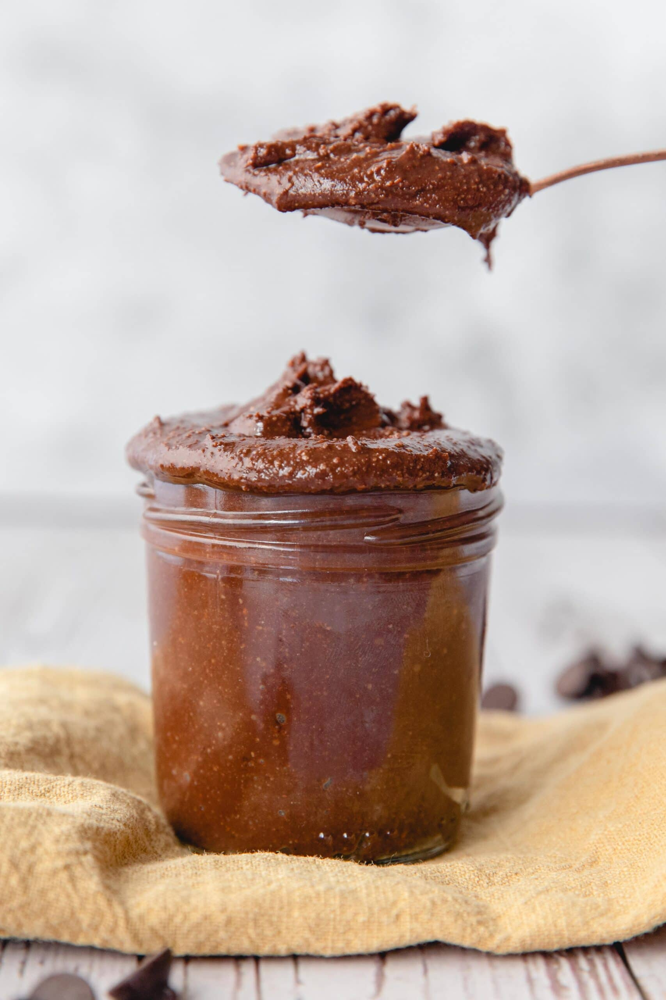

Healthy Nutella

Homemade sugar-free healthy nutella
This recipe tastes just as good as the original Nutella but it's completely sugar free.
It's also much healthier than the traditional kind: no palm oil, no dairy and no artificial ingredients.
Ingredients:
- Roasted hazelnuts
- Coconut sugar
- Cocoa powder
Steps:
- Toast your hazelnuts.
- Remove the loose skins.
- Blend the hazelnuts.
- Add the cocoa powder and sugar substitute.
- Blend.
- Transfer your homemade chocolate spread into a jar.